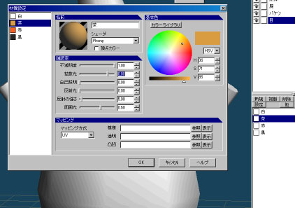
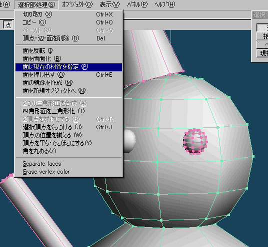
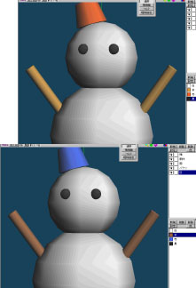
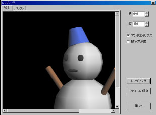

工程３
|
ゆきだるまの形を整えたら、次は色を付けてみましょう。 |
材質の設定 |
|
15  |
「材質」パネルの「新規」ボタンをクリックして「mat1〜4」を作成します。材質の名前をそれぞれ割り当てましょう。 |
|
16  |
「材質」をオブジェクトの「面」に設定するため、対象の「オブジェクト」をShiftキー＋左クリックします。 |
|
17  |
「材質」を編集すると適用した面全てに反映されます。 |
レンダリング |
|
18  |
「メニュー」→「ヘルプ」→「レンダリング」ウィンドウを表示して、「レンダリング」
ボタンをクリックしてレンダリングしてみましょう。「ファイルに保存」ボタンをクリックして画像データを
保存することができます。 |
これで、雪だるまは完成です。お疲れさまでした。